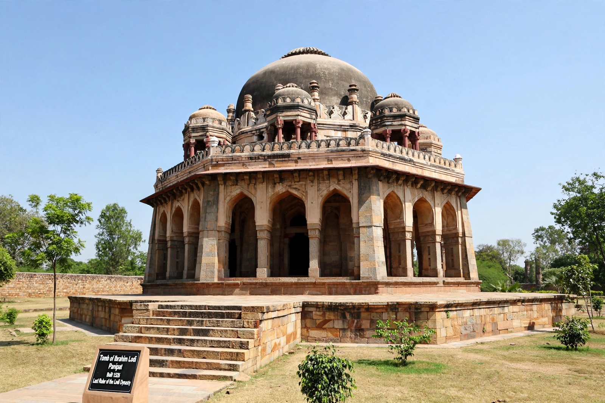

| Ibrahim Lodi | |
|---|---|
 | |
| Born | c. 1480 Delhi |
| Died | 21 April 1526 Panipat |
| Reign | Sultan of Delhi, 1517–1526 |
| Dynasty | Lodi |
Ibrahim Lodi (c. 1480 – 21 April 1526) was the last Sultan of Delhi, of the Afghan Lodi dynasty. His attempts to impose absolute authority on the Afghan nobility provoked revolts and invitations to the Timurid prince Babur to invade India, and he was killed at the First Battle of Panipat in 1526, ending the Delhi Sultanate and inaugurating the Mughal Empire.
Ibrahim succeeded his father Sikandar Lodi in 1517, after defeating a bid by his younger brother Jalal Khan. He demanded court ceremonial due to an absolute monarch — requiring nobles to stand with folded hands — confiscated jagirs, and imprisoned or executed powerful chiefs such as Azam Humayun. His harshness drove Daulat Khan Lodi, governor of the Punjab, and his uncle Alam Khan to invite Babur from Kabul.
In April 1526 Ibrahim marched to Panipat with a host Babur estimated at 100,000 men and 1,000 elephants. Babur's smaller army, with field artillery and carts lashed into a defensive line, shattered the Lodi host on 21 April; Ibrahim died fighting on the field with some 15,000 of his men. His tomb still stands at Panipat.
Delhi Sultanate · Second Battle of Panipat · Rana Sanga · Battle of Khanwa